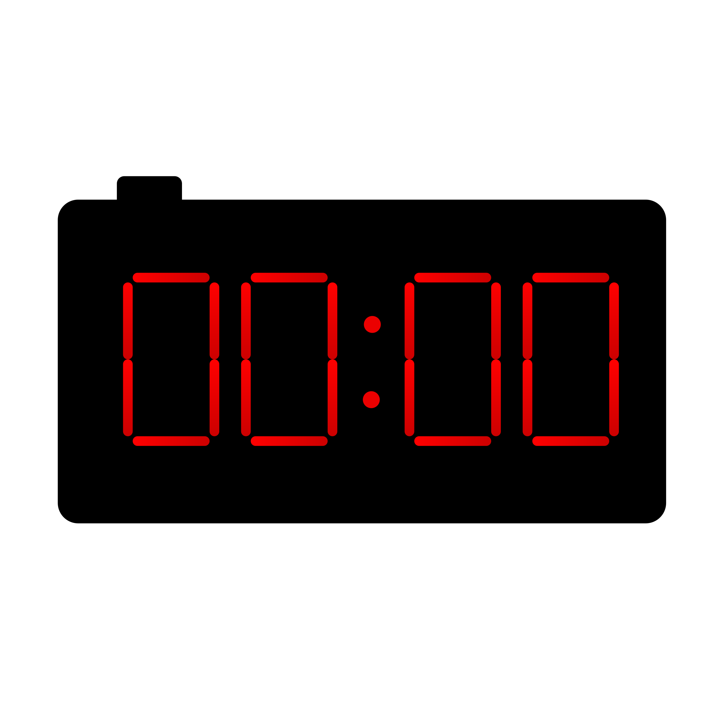

Projects


Digital Watch
Digital clocks: Timekeepers in the modern world, counting seconds with precision.
View ProjectHeart Animation
Heart animation: Captivating movements that symbolize love and emotional connections.
View Project
Dark mode on/off
"Dark mode: Toggling between light and dark, enhancing visual comfort.
View Project